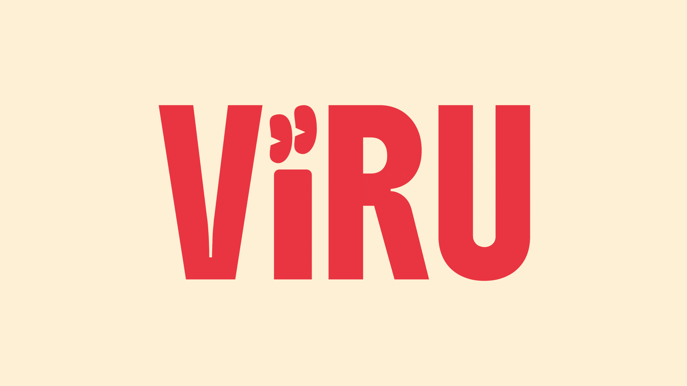

BRAND GUIDELINES
Il logo è composto da un pittogramma e da un logotipo. Come mostrato
accanto, questi due elementi devono essere sempre riprodotti insieme,
eccezion fatta per le immagini dei profili social dove può figurare
anche solo il pittogramma. Il logo non può essere ridisegnato,
alterato o manipolato digitalmente.
Il logo è disponibile in svg, jpeg e png. Si invita ad assicurarsi
prima di utilizzarlo, quale sia il formato è più adatto alla
destinazione d'uso.
FORMATI
svg: adatto per usi professionali
jpeg, png: pubblicazione desktop
VARIANTI
Il logo viene mostrato solamente nelle tre varianti mostrate in questa pagina o monocromatico bianco o nero. Per un maggiore approfondimento consultare la sezione dedicata ai colori. Si prega di evitare altre combinazioni di colori.
ACCESSIBILITÀ
Il logo deve sempre avere un ottimo contrasto con lo sfondo per garantire il massimo impatto e accessibilità. È previsto un margine di rispetto intorno al logo obbligatorio.
MARGINE DI RISPETTO
Nell'ordine di massimizzare la sua presenza visuale il logo richiede
un'area circostante priva di ogni altro elemento grafico o testuale.
Questa quantità di spazio deve essere sempre circoscritta attorno al
logo. È importante che questa regola venga osservata e la zona di
esclusione sia mantenuta tutte le volte che il logo venga utilizzato.
La distanza minima consigliata è di protezione per il logo. Il logo
apparirà su diversi formati e applicazioni e questo aiuterà a dare
chiarezza e presenza al marchio.
COLORI
I principali colori del marchio sono mostrati di seguito, questi colori dovrebbero essere usati in tutte le comunicazioni che riguardano il marchio.
CORAL
SAND
OCEAN
SKY
| Color | HEX | RGB |
|---|---|---|
| CORAL | #e83541 | 232,53,65 |
| SAND | #fdf0d5 | 253,240,213 |
| OCEAN | #003049 | 0,48,73 |
| SKY | #669bbc | 102,155,188 |
TIPOGRAFIA
Boldonse è stato selezionato come carattere tipografico principale del
marchio, ed è utilizzato per materiale promozionale prodotto
internamente. Si prega di evitare l'utilizzo di questo font per il
testo in blocchi. L'uso di questo carattere è riservato alla sola
riproduzione del logotipo e per i titoli.
Per i blocchi di testo si richiede l'uso del font Instrument Serif e
Instrument Italic per materiali destinati sia alla riproduzione
digitale che stampata.
Il testo può essere variato dal bordo sinistro del logotipo. Si prega
di evitare il giustificato in blocchi di titoli e testo. Si può
utilizzare il testo centrato in titoli per materiali destinati alla
diffusione del marchio come biglietti da visita, volantini e materiali
POP.
Entrambi i font sono disponibili su Google Fonts e possono essere
scaricati liberamente qui (Boldonse) e qui (Instrument Serif).